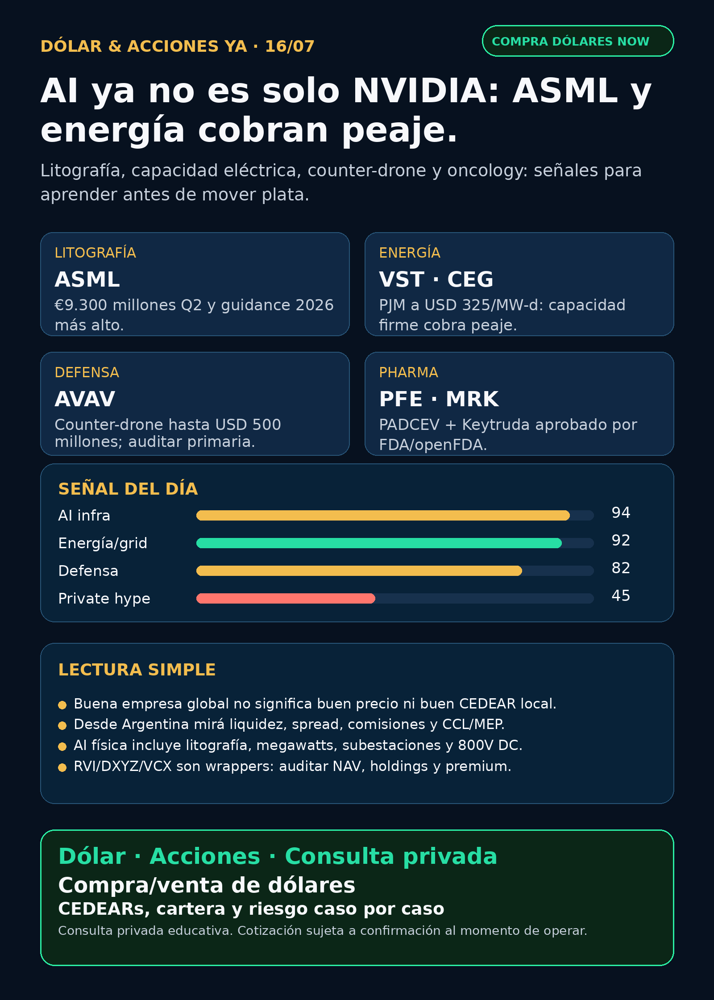

AI también paga litografía y energía.
ASML subió guidance; PJM/VST/CEG muestran peaje eléctrico; AVAV y PADCEV dejan señales verificables, con capa Argentina y sin recomendación de compra.
Texto WhatsApp
Placa del día

Dólar & Acciones YA — 16/07
Fecha de edición: 2026-07-16. Research educativo para Argentina. No es recomendación personalizada de compra o venta.
Lectura simple del día
La idea central de hoy: el negocio alrededor de inteligencia artificial se está ensanchando. Ya no alcanza mirar solamente NVIDIA o el software. La cadena que cobra peaje incluye litografía para fabricar chips, memoria, energía firme, red eléctrica, subestaciones, power hardware, defensa física y pharma con aprobaciones reales.
En criollo: si todos quieren más AI, alguien tiene que fabricar mejores chips, alimentar data centers con megawatts confiables, convertir electricidad dentro del rack y proteger infraestructura física. Pero buena tesis global no significa automáticamente buena inversión al precio actual ni buen instrumento para Argentina. Antes de ejecutar hay que mirar CEDEAR o vía USA, liquidez, spread, comisiones, MEP/CCL, moneda, tamaño de posición y riesgo.
Contexto dólar público usado solo como referencia educativa: BlueLytics marcó oficial vendedor ARS 1.498 y blue vendedor ARS 1.530 con timestamp 2026-07-15 19:45 -03. CriptoYa marcó MEP AL30 ARS 1.513,43 y CCL AL30 ARS 1.553,39 con timestamp de cierre. Para operar de verdad se confirma en broker vivo.
Ordenado por valor educativo y fuerza de señal de radar, no por recomendación de compra.
Tesis central
La señal más fuerte es ASML. Si la AI necesita más chips avanzados, la litografía sigue siendo cuello de botella. En paralelo, la subasta PJM vuelve a mostrar que data centers y demanda eléctrica empujan capacidad firme; defensa muestra presupuesto real en counter-drone; y pharma deja un evento regulatorio verificable por FDA.
Señales educativas del día
1) AI infrastructure / litografía — ASML (`ASML`)
- Qué pasó: ASML presentó 6-K del 15/7 con resultados Q2 2026.
- Dato clave: ventas netas Q2 de €9.300 millones, net income €2.900 millones, margen bruto 54,0%. Subió outlook 2026 a €43.000–€45.000 millones de ventas y margen bruto 54%–56%. La presentación conecta la demanda con adopción de AI en logic/memory y marca milestone High-NA EUV con Intel 18A.
- Fuente primaria: SEC 6-K: https://www.sec.gov/Archives/edgar/data/937966/000162828026048235/form6-kquarterlyfilings.htm ; exhibit press release: https://www.sec.gov/Archives/edgar/data/937966/000162828026048235/pressreleasefinancialresul.htm
- Lectura en criollo: ASML vende máquinas críticas para fabricar chips avanzados. Si AI demanda más semiconductores densos, ASML queda como peaje estructural.
- Accionable local Argentina: revisar CEDEAR/acceso, liquidez y spread antes de hablar de ejecución. Vía global/USA suele ser más directa, pero igual exige precio, riesgo y horizonte.
- Estado: señal fortalecida / en radar.
2) Energía / capacity markets — Vistra (`VST`) y Constellation (`CEG`)
- Qué pasó: SEC filings de `VST` y `CEG` mostraron resultados de la subasta PJM 2028–2029; Utility Dive agregó contexto de reserve shortfall y demanda por data centers.
- Dato clave: `VST` despejó 10.924,40 MW a USD 325/MW-d. `CEG` informó 18.875 MW, incluyendo 15.700 MW nucleares. Utility Dive reportó déficit de reservas de aproximadamente 6,8 GW y forecast de demanda +2 GW, en gran parte por data centers.
- Fuentes: VST SEC 8-K: https://www.sec.gov/Archives/edgar/data/1692819/000114036126028454/ef20077988_8k.htm ; CEG SEC 8-K: https://www.sec.gov/Archives/edgar/data/1868275/000186827526000080/ceg-20260714.htm ; Utility Dive: https://www.utilitydive.com/news/pjm-capacity-auction-price-cap-reserve-shortfall/825282/
- Lectura en criollo: AI no sólo compra GPU; también necesita energía confiable. Generación firme, nuclear/gas, capacidad y red eléctrica se vuelven peajes.
- Accionable local Argentina: `VST`/`CEG` requieren verificar CEDEAR/acceso local. Proxy local imperfecto: energéticas argentinas si tienen tesis propia; no comprar por contagio automático.
- Estado: fortalece tesis / vigilar.
3) Defensa / counter-UAS — AeroVironment (`AVAV`)
- Qué pasó: Overt Defense reportó contrato U.S. Army de hasta USD 500 millones para sistemas layered counter-drone de AeroVironment.
- Dato clave: contrato de tres años, IDIQ, sole-source, ligado a Domestic Shield/JIATF-401. Incluye sensores, jammers, lasers e interceptor missiles.
- Fuente secundaria verificada: https://www.overtdefense.com/2026/07/09/u-s-army-awards-aerovironment-a-500-million-contract-for-layered-counter-drone-defense-systems/
- Caveat: falta primaria DoD/Army/AVAV antes de usarlo como headline fuerte. Contrato IDIQ no significa revenue cobrado mañana.
- Lectura en criollo: defensa real no es solo primes viejas. Drones, counter-UAS y guerra física son presupuesto concreto, pero AVAV es high-beta y arrastra riesgos de integración/contabilidad ya vistos.
- Accionable local Argentina: no asumir acceso local. Para USA/global, mirar precio, liquidez, riesgo y tamaño.
- Estado: señal fortalecida / auditar primaria.
4) Pharma / oncology — PADCEV + Keytruda (`PFE`, Astellas `4503.T`, `MRK`)
- Qué pasó: FDA aprobó PADCEV + Keytruda/QLEX para MIBC como tratamiento neoadjuvant/adjuvant, independientemente de elegibilidad a cisplatino.
- Dato clave: openFDA confirma `PADCEV` BLA761137, supplement 37, status AP, fecha 20260710, clase EFFICACY.
- Fuentes primarias: openFDA: https://api.fda.gov/drug/drugsfda.json?search=products.brand_name:%22PADCEV%22&limit=1 ; FDA app letter: https://www.accessdata.fda.gov/drugsatfda_docs/appletter/2026/761137Orig1s037ltr.pdf
- Lectura en criollo: pharma no es solo GLP-1. Oncology tiene catalizadores regulados verificables, aunque aprobación no garantiza ventas ni buen retorno bursátil.
- Accionable local Argentina: revisar CEDEAR/acceso de `PFE` y `MRK`; Astellas es más complejo por Tokio/ADR.
- Estado: fortalece oncology / vigilar comercialización.
5) Power semiconductors / 800V DC — Power Integrations (`POWI`) + NVIDIA architecture (`NVDA`)
- Qué pasó: Yahoo/Insider Monkey reportó diseños 15W/35W de Power Integrations para arquitectura NVIDIA Kyber 800 VDC.
- Dato clave: PowiGaN 1700V, reducción de board space/BOM 30% y eficiencia ≥88%, orientado a auxiliary power para infraestructura AI high-voltage.
- Fuente secundaria: https://finance.yahoo.com/technology/articles/power-integrations-powi-unveils-ultra-121032207.html
- Caveat: falta release oficial de Power Integrations/NVIDIA antes de headline fuerte.
- Lectura en criollo: el segundo peaje de AI baja hasta el rack: GaN, corriente continua, protección y control de potencia.
- Accionable local Argentina: probable vía global/USA; no asumir CEDEAR.
- Estado: vigilar / fuente oficial pendiente.
Watchlist base — seguimiento rápido
- RKLB: sin SEC nuevo material; sigue tesis space, pero sin señal primaria nueva esta noche.
- NVDA: sin filing nuevo material; POWI/NVIDIA y cooling son apoyo de infraestructura, no catalyst directo confirmado para NVDA.
- PLTR: sin fuente primaria material suficiente para headline.
- TSM: 6-K de revenue de junio sigue vigente; no repetir como novedad de hoy.
- MU: HBM/memory cycle en radar; sin filing primario nuevo.
- GOOGL/GOOG: sin señal primaria nueva fuerte en cloud/TPU/Waymo.
- AAPL / AVGO: acuerdo custom ASIC previo sigue vigente; hoy sólo análisis secundario.
- HOOD: actividad ligada a `RVI`; Agentic Trading/Trading MCP sigue como tesis previa.
- TSLA: titulares robotaxi/NHTSA quedan audit-only por falta de primaria usable.
- ASML: señal fuerte del día.
- Gold / GLD / GOLD / B: instrumento ambiguo; no usar precio ni tesis hasta confirmar.
- RVI: wrapper con riesgo NAV/premium/liquidez; no operating company.
- SNDK / CBRS: revisados sin señal primaria nueva fuerte.
Energía y AI power
- Señal principal: PJM / `VST` / `CEG`. Esto refuerza que AI power incluye capacity markets, nuclear, gas, generación firme y grid reliability.
- Power hardware: `POWI` suma 800V DC/GaN; siguen en radar GEV, Siemens Energy (`ENR.DE`), Hitachi (`6501.T`/`HTHIY`), HD Hyundai Electric, Hyosung, Infineon, LS Electric y ETFs industriales/utility según instrumento.
- Argentina energía: `YPF` recompra de notes del 13/7 sigue como señal financiera menor; `VIST` tuvo 6-K de sustainability disclosures, no catalyst operativo. `PAMP`, `TGS`, `CEPU` revisadas sin señal nueva fuerte.
Pharma / salud
- `PFE`/Astellas/`MRK`: PADCEV + Keytruda es señal regulatoria real.
- `AZN`: Zegfrovy/Dizal sigue como señal oncology reciente; Wainua/IONS sigue como señal negativa previa en ATTR-CM.
- `NVO`: buyback vigente, no catalyst clínico GLP-1.
- `LLY` / orforglipron / Foundayo: ruido alto y titulares reciclados; no publicar “aprobación fresca” sin FDA/company/openFDA actual.
- Celcuity: Reuters apareció pero quedó bloqueado; no elevar sin primaria.
Radar amplio fuera de watchlist
- Defensa / guerra física: `AVAV` es la señal fuerte a auditar con primaria. `GE`, `RTX`, `LMT`, `NOC`, `GD`, `HWM`, `KTOS`, `BA`, `ITA/XAR` revisados sin filing primario nuevo superior.
- Autonomous mobility / physical AI: Tesla, Waymo/Alphabet, Uber, Zoox/Amazon y Joby revisados sin primaria nueva fuerte. Mantener seguimiento regulatorio, permisos, seguridad y unit economics.
- Space / orbital AI: `SPCX`, SpaceX, Starlink, RKLB y wrappers revisados. Sin SEC material nuevo para SpaceX/SPCX. Reuters lockup/selloff quedó bloqueado por DataDome.
- Crypto gobernado / rails: sin señal nueva mejor que Robinhood Chain/Stock Tokens/Agentic Accounts ya indexado. No hay token trade.
- Private wrappers: `RVI`/`DXYZ`/`VCX`/ARKVX/AGIX/XOVR siguen zona de riesgo. No presentar como acceso limpio a SpaceX/OpenAI sin NAV, holdings, premium/descuento, liquidez y acceso Argentina/USA.
Capa Argentina — cómo leer esto desde acá
- CEDEAR: no es la acción original; tiene ratio, liquidez local, spread, CCL implícito y comisiones.
- MEP/CCL: si comprás o vendés activos dolarizados desde Argentina, el tipo de cambio implícito afecta el resultado aunque la empresa afuera no se mueva.
- Buena empresa ≠ buen precio: ASML puede ser excelente compañía y aun así requerir análisis de valuación, timing y tamaño.
- Proxy imperfecto: una energética argentina no es lo mismo que `VST`/`CEG`, aunque comparta el tema energía. Tiene moneda, regulación y riesgo local distinto.
- Cuenta USA/global: puede simplificar ticker y liquidez, pero agrega fiscalidad/compliance y riesgo de mercado.
Red flags / hype para ignorar hoy
- “SpaceX por cualquier wrapper”: no. RVI/DXYZ/VCX requieren NAV, holdings, premium/descuento, liquidez y acceso.
- “FDA aprobó GLP-1 nuevo”: no elevar sin FDA/company/openFDA actual. Hay titulares reciclados.
- “Robotaxi/FSD resuelto”: no sin primaria regulatoria verificable.
- “Contrato IDIQ = revenue seguro”: no. En defensa hay que distinguir techo contractual, órdenes efectivas, margen e integración.
- “Gold/GLD/GOLD/B”: no tocar hasta saber si hablamos de ETF, minera, oro físico u otro instrumento.
Qué mirar después
1. ASML: órdenes, backlog, High-NA EUV, China/export controls y valuación.
2. PJM/AI power: verificar PJM directo, próximos capacity auctions, interconexión y data-center load.
3. AVAV: buscar primaria DoD/AVAV del contrato counter-UAS y leer términos de IDIQ.
4. Pharma: FDA/company primary para Celcuity y próximos catalysts oncology/GLP-1.
5. Argentina: confirmar CEDEAR/acceso local, spread y CCL antes de cualquier análisis operativo.
Recibo de cobertura
Watchlist base revisada; energéticas/AI power revisadas; transformadores/power hardware revisado; pharma/GLP-1 revisado; defensa/aeroespacial revisado; space/private wrappers revisado; autonomía/physical AI revisado; crypto gobernado revisado. Sin audio/TTS por política text-only vigente.
Servicio privado
Dólar · Acciones · Consulta privada. Si querés comprar o vender dólares, entender CEDEARs, armar una cartera o revisar riesgo, se ve por privado caso por caso. Cotización de dólares sujeta a confirmación al momento de operar.
Disclaimer
No es asesoramiento financiero personalizado. Es research educativo para decisión humana.